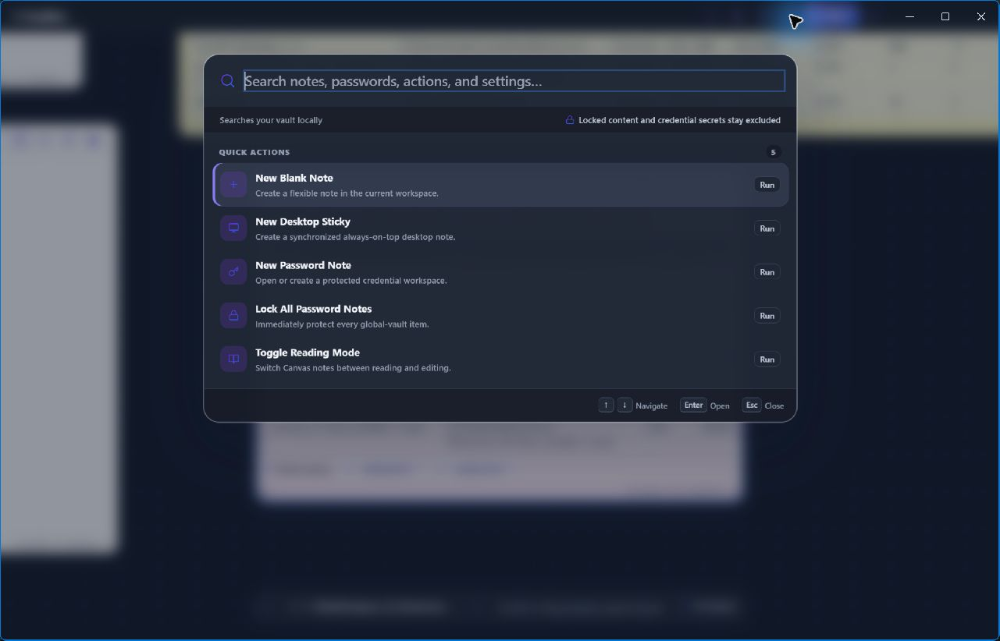
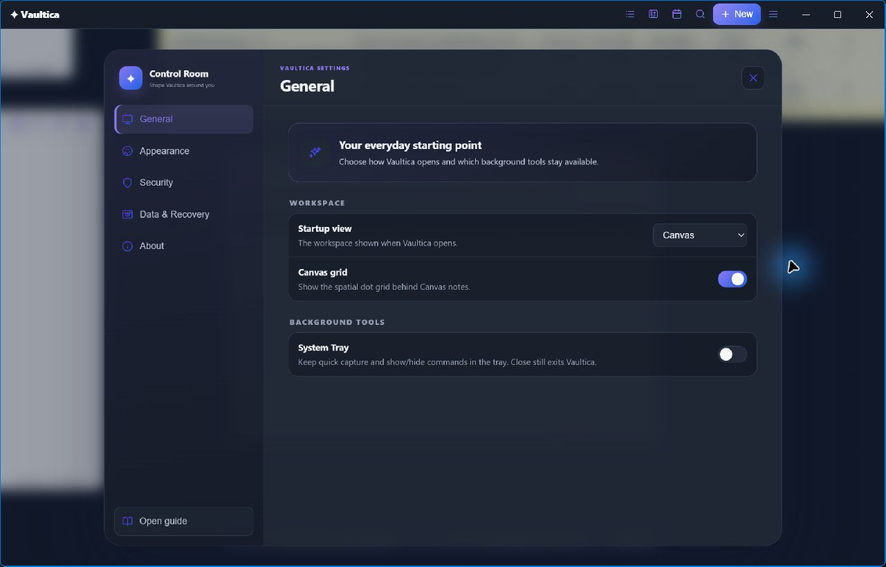
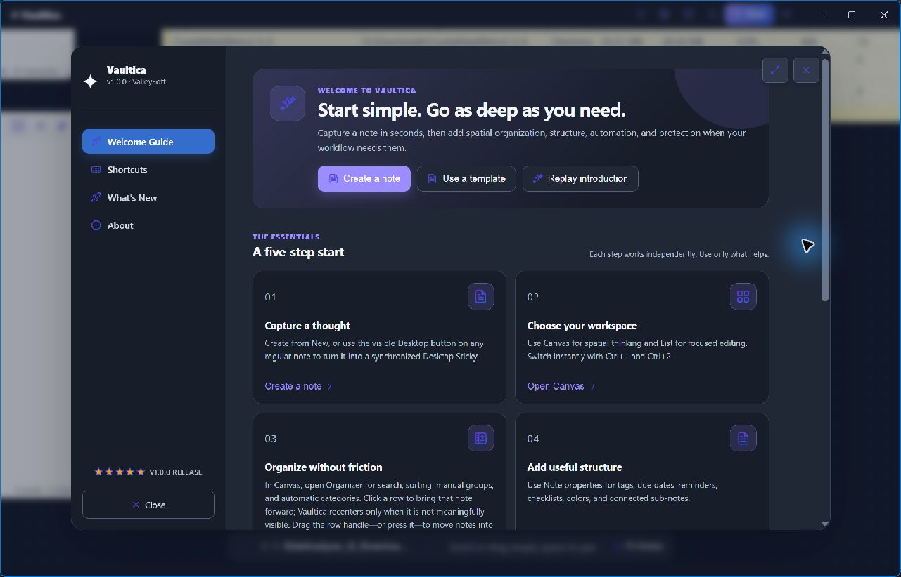
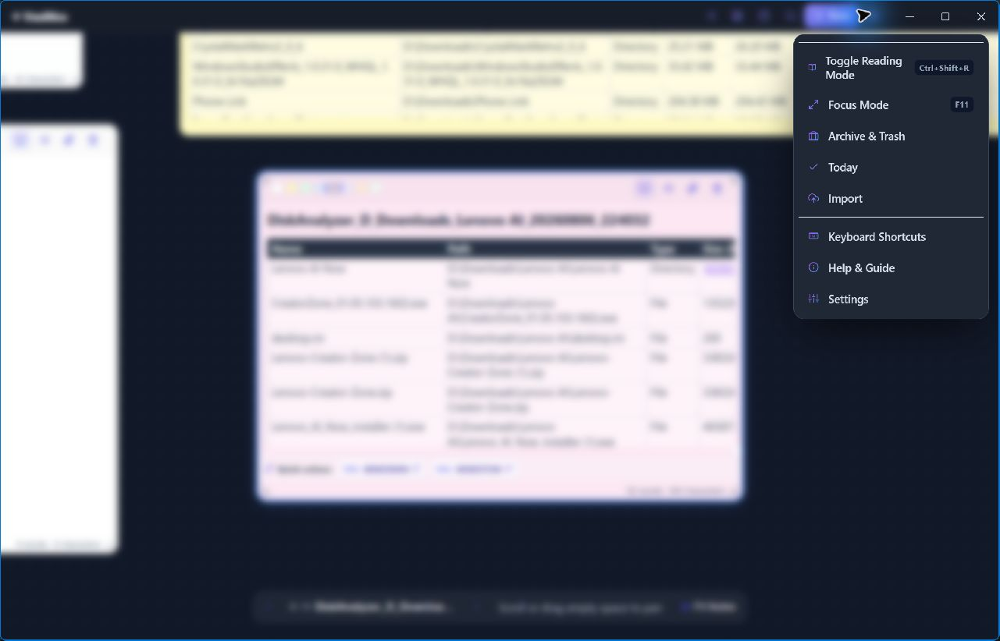
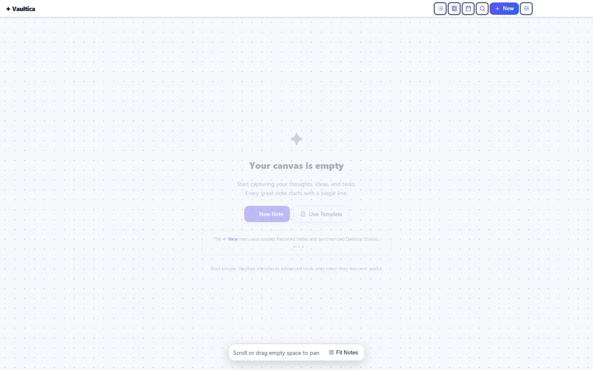

CreateStart a note, Desktop Sticky, password item, template, screenshot, or OCR capture.

Universal searchSearch notes and actions from one keyboard-friendly surface.

Control RoomEveryday choices first; appearance, security, recovery, and product details nearby.

Welcome GuideStart with five essentials, then discover advanced tools when needed.

Application menuFrequent commands stay compact and include visible keyboard shortcuts.

Canvas onboardingA quiet starting point explains how to create the first note without blocking the workspace.
Captured from the packaged Windows application. Background content is blurred by Vaultica itself.
Local-firstNo account required
One workspaceCanvas and focused list
Windows-nativeCapture, OCR, and stickies
See the real application
Not a mockup. This is Vaultica.
These are direct captures from the packaged Windows app. Open any screen to inspect the interface at full size.
The actual workflow
Three surfaces. One local workflow.
Each surface is optional. Use the canvas for thinking, the list for finding, and the vault for sensitive records.
01
Implemented in 1.0.0Canvas ↔ ListChoose the surface that fits the moment.
Spatial notes
Arrange ideas freely on an infinite canvas, or switch to a focused list when structure matters more.
Rich text and templates
Organizer and smart groups
History, reminders, and exports
02
Windows integrationDesktop StickySend a regular note out, then return it to Vaultica.
Desktop stickies
Send a note to the desktop, keep it available beside your work, then return it to the workspace.
Synced with its Vaultica note
Quick actions for useful content
Designed for mouse, touch, and touchpad
03
Protected workspacePassword VaultStructured items, health checks, and TOTP.
Password vault
Store logins, payment cards, identities, licenses, secure notes, and more in structured vault items.
Password health and generator
Authenticator secrets and custom fields
Clipboard auto-clear controls
Local
What “local-first” means here
Your data stays on your Windows device.
Vaultica currently has no user accounts, advertising, analytics SDKs, or cloud synchronization. Notes, managed attachments, OCR, and backups stay on the Windows device or in folders you select.
Protected contentPIN-protected note text and password entries are encrypted before persistence.
Clear boundariesExternal links open only when you choose them; readable exports are clearly identified.
Recovery with intentEncrypted backups and optional recovery tools stay under your control.